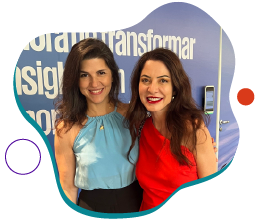
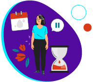
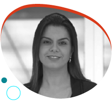
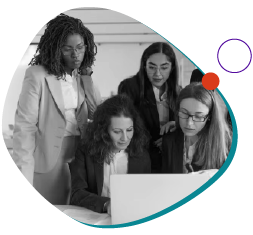
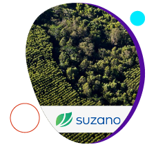
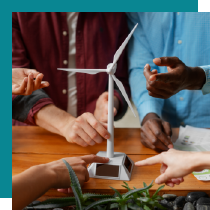

Não queremos ir para o spam! =) selecione este email como
“confiável” ou mova-o para a Caixa de Entrada.
Conhecimento, aliados e políticas internas acelerando
carreiras femininas
Ser curiosa, manter-se atualizada, agir com intencionalidade
e buscar aliados são algumas das dicas compartilhadas por
Renata Mello Feltrin, diretora executiva da CI&T e
referência em inovação, tecnologia, diversidade e liderança,
para impulsionar as carreiras femininas nas corporações e no
ecossistema.
Já as empresas devem criar políticas que apoiem uma divisão
mais equitativa, evitando a falta de representatividade em
cargos de tomada de decisão, diferenças salariais e
disparidades nas responsabilidades domésticas e de cuidado
com os filhos. Isso permitirá que tanto homens quanto
mulheres possam progredir em suas carreiras sem desvantagens
desproporcionais.
Com mais de 20 anos de experiência no mercado de tecnologia,
Renata acelerou sua própria carreira e contribuiu para o
desenvolvimento de muitas outras mulheres. Visite o blog WE
Impact para saber mais sobre sua trajetória e obter dicas
valiosas.
Está aproveitando a leitura?
Que tal compartilhar essa edição da WE Impact News com
outras empreendedoras e empreendedores da sua rede de
contatos? 😉
#WIN – WE Impact Network
WE Impact no “Mulheres em Movimento”

"O sucesso só vem para quem o define para si mesmo e está
disposto a passar por todas as etapas." Essa foi uma das
frases ditas por Ana Paula Padrão durante o evento "Mulheres
em Movimento", realizado pelo KNOW (KPMG’s Network of
Women), Programa de Equidade de Gênero da KPMG, investidora
da WE Impact!
Nossa CEO, Lícia Souza, teve a honra de entrevistar a
jornalista e apresentadora e também compartilhar dicas e
ferramentas valiosas em uma palestra sobre o
autoempreendedorismo.
Além delas, o encontro reuniu outras lideranças femininas
para discutir os desafios e as oportunidades que as
executivas enfrentam, bem como a importância de suas
atuações para o mercado de trabalho. Foi um momento também
de discutir tendências das indústrias e características das
lideranças do futuro.
Primeiros passos para a D&I com baixo custo e alto impacto

Você já pensou em adotar a licença menstrual na sua empresa?
Essa prática implica em baixos custos e não demonstra queda
na produtividade em países. O benefício vem demonstrando
altos índices de impacto positivo ao melhorar o bem-estar, o
engajamento e reforçar o comprometimento da organização com
a diversidade e a inclusão.
A Espanha é um exemplo de país que aprovou uma lei que
garante a licença remunerada. Recentemente, movimentos como
esse surgiram no Brasil: servidoras públicas do Distrito
Federal conquistaram o direito à licença menstrual de até 3
dias a cada mês.
Esse é um exemplo de benefício que pode ser adotado em
organizações de diversos portes e segmentos. Leia a matéria
para conhecer casos, obstáculos e mais sobre os benefícios
dessa ação.
#DicadaCEO

“Contei com o apoio de diversos executivos e executivas que
atuaram como meus líderes e mentores e, acima de tudo, com o
incentivo dos meus pais, que, embora tenham tido uma
infância na roça muito pobre e difícil, sempre trabalharam
muito para incentivar que seus três filhos estudassem e
tivessem um bom emprego”
- Janine Goulart, Sócia líder da área de People Services
da
KPMG e lider do KNOW, falando sobre sua jornada no
blog WE Impact
#ElasImpactam

Empreendendo pela equidade
Dados do Sebrae de 2023 mostram que existem 10,3 milhões de
mulheres empreendedoras no Brasil, um número significativo,
mas que ainda está longe da equidade. Para se ter uma ideia,
o público masculino domina 65,6% do mercado.
Apesar de serem uma minoria numérica e enfrentarem uma série
de desafios de gênero, elas estão determinadas a não
desistir, muito pelo contrário, transformam seus negócios em
uma ferramenta para promover a equidade de gênero no mercado
e na sociedade.
Empreendedoras brasileiras têm liderado uma série de ações
no formato B2B com foco em reduzir gaps ainda presentes
dentro do ambiente corporativo. Essas soluções visam reduzir
as barreiras que impedem o avanço na carreira das mulheres,
sua estabilidade profissional e até mesmo sua motivação para
empreender.
Conheça as soluções e entenda melhor esse cenário:
#EmpresasQueTransformam

Relatório de Sustentabilidade 2023
Em 2023, a Suzano, uma corporação integrante da
#WEImpactNetworking, investiu R$220 milhões em pesquisa e
inovação, estabeleceu um hub de inovabilidade na China e
acelerou mais de 12 startups voltadas para biosegurança.
Essas foram algumas das ações realizadas pela empresa.
Os dados estão no Relatório de Sustentabilidade 2023, que
reúne destaques financeiros, sociais, ambientais e de
governança corporativa da corporação, levando em
consideração princípios como os 17 Objetivos de
Desenvolvimento Sustentável (ODS) da ONU.
Clique no link e descubra como a Suzano reforça o
compromisso com agente de transformações sociais e
ambientais, plantando um futuro mais sustentável para as
pessoas e para o planeta!
#NaMídia

WE Impact apoia programa de investimentos em startups
com foco em sustentabilidade e indústria 4.0
A WE Impact é uma das parceiras da segunda edição da Oxygea
Labs.
O programa, que encerrou a primeira fase da seleção em 21 de
abril, procura potencializar e investir em startups com
soluções transformadoras em neutralidade de carbono,
economia circular, energia renovável, novos materiais e
transformação digital. Isso inclui Smart Factory, Analytics
e Big Data, que já tenham seu produto ou serviço em fase de
validação com clientes.
#NasRedes
Perdeu esse conteúdo?
Para marcar o mês das mulheres, selecionamos algumas
empreendedoras e lideranças femininas que se destacam na
tecnologia e inovação, colaborando para a equidade e
transformação no ecossistema. Muitas delas já compartilharam
suas visões e conselhos valiosos no blog WE Impact. Venha se
inspirar e aprender com elas!